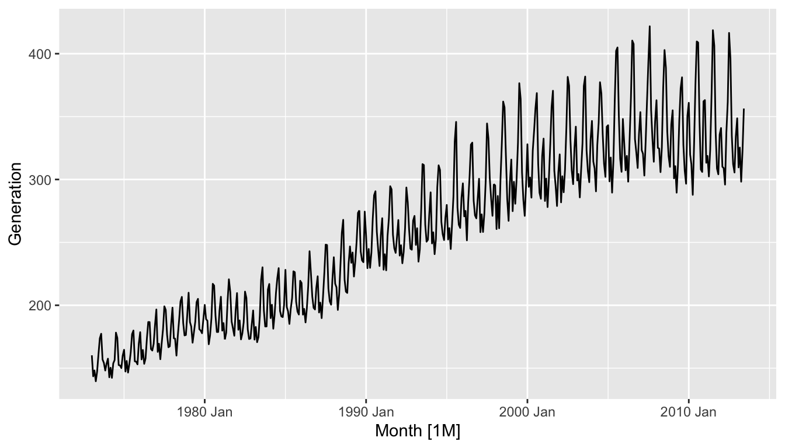
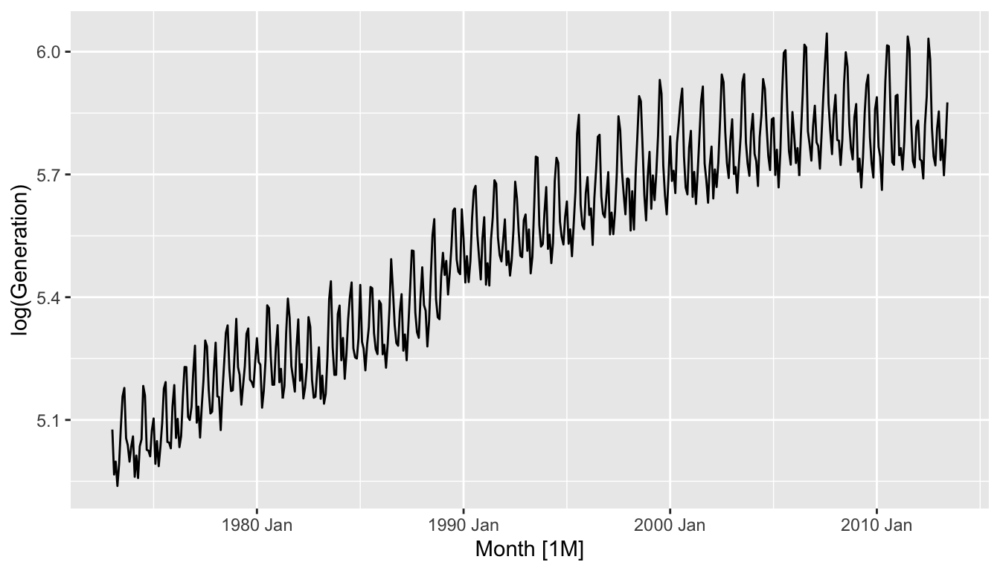

Chapter 2 ARIMA models
- AR: autoregressive (lagged observations as inputs)
- I: integrated (differencing to make series stationary)
- MA: moving average (lagged errors as inputs)
An ARIMA model is rarely interpretable in terms of visible data structures like trend and seasonality. But it can capture a huge range of time series patterns.
2.1 Stationarity and differencing
2.1.1 Stationarity
Definition
If \(\{y_t\}\) is a stationary time series, then for all \(s\), the distribution of \((y_t,\dots,y_{t+s})\) does not depend on \(t\).
A stationary series is:
- roughly horizontal
- constant variance
no patterns predictable in the long-term
- Transformations help to stabilize the variance.
For ARIMA modelling, we also need to stabilize the mean.
Identifying non-stationary series
- time plot.
- The ACF of stationary data drops to zero relatively quickly
- The ACF of non-stationary data decreases slowly.
- For non-stationary data, the value of r1 is often large and positive.

- A time series, \(\{Y_t, t=0, \pm1,\dots\}\) is said to be strict stationary, if \((Y_1, \dots, Y_n)\) and \((Y_{1+h}, \dots, Y_{n+h})\) have the same joint distribution for all integers \(h\) and \(n>0.\)
2.1.1.1 Weak Stationarity
Definition: Covariance function (in (Brockwell et al. 2016), p. 15; the notations have been changed for consistency within this note)
Let \(\{Y_t\}\) be a time series with \(E(Y_t^2)<\infty.\) The mean function of \(\{Y_t\}\) is
\[\mu_Y(t)= E(Y_t)\]
The covariance function of \(\{Y_t\}\) is
\[\gamma_Y(r,s)=Cov(Y_r, Y_s)=E[(Y_r-\mu_Y(r))(Y_s-\mu_Y(s))]\]
for all intergers \(r\) and \(s\).
Definition: Weakly stationary (in (Brockwell et al. 2016), p. 15; the notations have been changed for consistency within this note)
\(\{Y_t\}\) is weakly stationary if
- \(\mu_Y(t)\) is independent of \(t\),
and
- \(\gamma_Y(t+h,t)\) is independent of \(t\) for each \(h\).
- Unless specifically indicate otherwise, whenever we use the term stationary we shall mean weakly stationary.
2.1.2 Differencing
- Differencing helps to stabilize the mean.
- The differenced series is the change between each observation in the original series: \(y'_t = y_t - y_{t-1}\).
- The differenced series will have only \(T-1\) values since it is not possible to calculate a difference \(y_1'\) for the first observation.
2.1.2.1 Second-order differencing
Occasionally the differenced data will not appear stationary and it may be necessary to difference the data a second time:
\[y''_{t} = y'_{t} - y'_{t - 1}\] \[= (y_t - y_{t-1}) - (y_{t-1}-y_{t-2})\] \[= y_t - 2y_{t-1} +y_{t-2}.\]
- \(y_t''\) will have \(T-2\) values.
- In practice, it is almost never necessary to go beyond second-order differences.
2.1.2.2 Seasonal differencing
A seasonal difference is the difference between an observation and the corresponding observation from the previous year.
\[y'_t = y_t - y_{t-m}\]
where \(m=\) number of seasons.
- For monthly data \(m=12\).
- For quarterly data \(m=4\).
Example : Electricity production




- Seasonally differenced series is closer to being stationary.
- Remaining non-stationarity can be removed with further first difference.
If \(y'_t = y_t - y_{t-12}\) denotes seasonally differenced series, then twice-differenced series is
\[y^*_t = y'_t - y'_{t-1}\] \[= (y_t - y_{t-12}) - (y_{t-1} - y_{t-13})\] \[= y_t - y_{t-1} - y_{t-12} + y_{t-13}.\]
When both seasonal and first differences are applied \(\dots\)
- it makes no difference which is done first—the result will be the same.
- If seasonality is strong, we recommend that seasonal differencing be done first because sometimes the resulting series will be stationary and there will be no need for further first difference.
It is important that if differencing is used, the differences are interpretable.
2.1.2.3 Interpretation of differencing
- first differences are the change between one observation and the next;
- seasonal differences are the change between one year to the next.
But taking lag 3 differences for yearly data, for example, results in a model which cannot be sensibly interpreted.
2.1.3 Backshift notation
A very useful notational device is the backward shift operator, \(B\), which is used as follows: \[B y_{t} = y_{t - 1}\]
In other words,
- \(B\), operating on \(y_{t}\), has the effect of shifting the data back one period.
- Two applications of \(B\) to \(y_{t}\) shifts the data back two periods: \[B(By_{t}) = B^{2}y_{t} = y_{t-2}\]
- For monthly data, if we wish to shift attention to “the same month last year”, then \(B^{12}\) is used, and the notation is \[B^{12}y_{t} = y_{t-12}\].
- The backward shift operator is convenient for describing the process of differencing.
- A first difference can be written as \[y^{\prime}_{t}= y_{t} - y_{t-1}= y_t - By_{t} = (1 - B)y_{t}\]
- Note that a first difference is represented by \((1 - B)\).
Similarly, if second-order differences (i.e., first differences of first differences) have to be computed, then: \[y''_{t} = y_{t} - 2y_{t - 1} + y_{t - 2} = (1 - B)^{2} y_{t}\]
- Second-order difference is denoted \((1- B)^{2}\).
- Second-order difference is not the same as a second difference, which would be denoted \(1- B^{2}\);
In general, a \(d\)th-order difference can be written as
\[(1 - B)^{d} y_{t}\] * A seasonal difference followed by a first difference can be written as
\[(1-B)(1-B^m)y_t\] - The “backshift” notation is convenient because the terms can be multiplied together to see the combined effect.
\[(1-B)(1-B^m)y_t = (1 - B - B^m + B^{m+1})y_t\] \[= y_t-y_{t-1}-y_{t-m}+y_{t-m-1}.\] - For monthly data, \(m=12\) and we obtain the same result as earlier.
2.2 Non-seasonal ARIMA models
2.2.1 Autoregressive models
Autoregressive (AR) models: \[y_{t} = c + \phi_{1}y_{t - 1} + \phi_{2}y_{t - 2} + \cdots + \phi_{p}y_{t - p} + \varepsilon_{t},\] where \(\varepsilon_t\) is white noise. This is a multiple regression with of \(y_t\) as predictors.
2.2.1.1 AR(1) model
\[y_{t} = 18 -0.8 y_{t - 1} + \varepsilon_{t}\] \[\varepsilon_t\sim N(0,1),\quad T=100.\]
\[y_{t} = c + \phi_1 y_{t - 1} + \varepsilon_{t}\]
- When \(\phi_1=0\), \(y_t\) is equivalent to WN
- When \(\phi_1=1\) and \(c=0\), \(y_t\) is equivalent to a RW
- When \(\phi_1=1\) and \(c\ne0\), \(y_t\) is equivalent to a RW with drift
- When \(\phi_1<0\), \(y_t\) tends to oscillate between positive and negative values.
2.2.1.2 AR(2) model
\[y_t = 8 + 1.3y_{t-1} - 0.7 y_{t-2} + \varepsilon_t\] \[\varepsilon_t\sim N(0,1), \qquad T=100.\]
2.2.1.3 Stationarity conditions
- We normally restrict autoregressive models to stationary data, and then some constraints on the values of the parameters are required.
General condition for stationarity
Complex roots of \(1-\phi_1 z - \phi_2 z^2 - \dots - \phi_pz^p\) lie outside the unit circle on the complex plane.
- For \(p=1\): \(-1<\phi_1<1\).
- For \(p=2\):\(-1<\phi_2<1\qquad \phi_2+\phi_1 < 1 \qquad \phi_2 -\phi_1 < 1\).
- More complicated conditions hold for \(p\ge3\).
- Estimation software takes care of this.
2.2.2 Moving Average (MA) models
Moving Average (MA) models: \[y_{t} = c + \varepsilon_t + \theta_{1}\varepsilon_{t - 1} + \theta_{2}\varepsilon_{t - 2} + \cdots + \theta_{q}\varepsilon_{t - q},\] where \(\varepsilon_t\) is white noise. This is a multiple regression with past errors as predictors.
- Don’t confuse this with moving average smoothing!
2.2.2.1 MA(1) model
\[y_t = 20 + \varepsilon_t + 0.8 \varepsilon_{t-1}\] \[\varepsilon_t\sim N(0,1),\quad T=100.\]
2.2.2.2 MA(2) model
\[y_t = \varepsilon_t -\varepsilon_{t-1} + 0.8 \varepsilon_{t-2}\] \[\varepsilon_t\sim N(0,1),\quad T=100.\]
2.2.2.3 MA(\(\infty\)) models
It is possible to write any stationary AR(\(p\)) process as an MA(\(\infty\)) process.
Example: AR(1) \[y_t = \phi_1y_{t-1} + \varepsilon_t\] \[= \phi_1(\phi_1y_{t-2} + \varepsilon_{t-1}) + \varepsilon_t\] \[= \phi_1^2y_{t-2} + \phi_1 \varepsilon_{t-1} + \varepsilon_t\] \[= \phi_1^3y_{t-3} + \phi_1^2\varepsilon_{t-2} + \phi_1 \varepsilon_{t-1} + \varepsilon_t\] \[\dots\]
Provided \(-1 < \phi_1 < 1\): \[y_t = \varepsilon_t + \phi_1 \varepsilon_{t-1} + \phi_1^2 \varepsilon_{t-2} + \phi_1^3 \varepsilon_{t-3} + \cdots\]
2.2.3 Invertibility
- Any MA(\(q\)) process can be written as an AR(\(\infty\)) process if we impose some constraints on the MA parameters.
- Then the MA model is called “invertible”.
- Invertible models have some mathematical properties that make them easier to use in practice.
- Invertibility of an ARIMA model is equivalent to forecastability of an ETS model.
General condition for invertibility
Complex roots of \(1+\theta_1 z + \theta_2 z^2 + \dots + \theta_qz^q\) lie outside the unit circle on the complex plane.
- For \(q=1\): \(-1<\theta_1<1\).
- For \(q=2\):\(-1<\theta_2<1\qquad \theta_2+\theta_1 >-1 \qquad \theta_1 -\theta_2 < 1\).
- More complicated conditions hold for \(q\ge3\).
- Estimation software takes care of this.
2.2.4 ARIMA models
Autoregressive Moving Average models:
\[y_{t} = c + \phi_{1}y_{t - 1} + \cdots + \phi_{p}y_{t - p}\] \[+ \theta_{1}\varepsilon_{t - 1} + \cdots + \theta_{q}\varepsilon_{t - q} + \varepsilon_{t}\]
- Predictors include both lagged values of \(y_t\) and lagged errors.
- Conditions on coefficients ensure stationarity.
- Conditions on coefficients ensure invertibility.
Autoregressive Integrated Moving Average models
- Combine ARMA model with differencing.
- \((1-B)^d y_t\) follows an ARMA model.
Autoregressive Integrated Moving Average models
ARIMA(\(p, d, q\)) model
- AR: \(p =\) order of the autoregressive part
- I: \(d =\) degree of first differencing involved
MA: \(q =\) order of the moving average part.
- White noise model: ARIMA(0,0,0)
- Random walk: ARIMA(0,1,0) with no constant
- Random walk with drift: ARIMA(0,1,0) with const.
- AR(\(p\)): ARIMA(\(p\),0,0)
- MA(\(q\)): ARIMA(0,0,\(q\))
2.2.5 Backshift notation for ARIMA
- ARMA model:
\[y_{t} = c + \phi_{1}By_{t} + \cdots + \phi_pB^py_{t} + \varepsilon_{t} + \theta_{1}B\varepsilon_{t} + \cdots + \theta_qB^q\varepsilon_{t}\]
\[\text{or}\quad (1-\phi_1B - \cdots - \phi_p B^p) y_t = c + (1 + \theta_1 B + \cdots + \theta_q B^q)\varepsilon_t\]
ARIMA(1,1,1) model:
\[(1 - \phi_{1} B) (1 - B) y_{t} = c + (1 + \theta_{1} B) \varepsilon_{t}\]
NOTE:
Written out: \[y_t = c + y_{t-1} + \phi_1 y_{t-1}- \phi_1 y_{t-2} + \theta_1\varepsilon_{t-1} + \varepsilon_t\]
2.3 Estimation and order selection
2.3.1 Maximum likelihood estimation
Having identified the model order, we need to estimate the parameters \(c\), \(\phi_1,\dots,\phi_p\), \(\theta_1,\dots,\theta_q\).
- MLE is very similar to least squares estimation obtained by minimizing \[\sum_{t-1}^T e_t^2\]
- The
ARIMA()function allows CLS or MLE estimation. - Non-linear optimization must be used in either case.
- Different software will give different estimates.
2.3.2 Partial autocorrelations
Partial autocorrelations measure relationship between \(y_{t}\) and \(y_{t - k}\), when the effects of other time lags — \(1, 2, 3, \dots, k - 1\) — are removed.
\[\alpha_k = k \text{th partial autocorrelation coefficient}\]
\[= \text{equal to the estimate of } \phi_k \text{ in regression:}\]
\[y_t = c + \phi_1 y_{t-1} + \phi_2 y_{t-2} + \dots + \phi_k y_{t-k}.\]
- Varying number of terms on RHS gives \(\alpha_k\) for different values of \(k\).
- \(\alpha_1=\rho_1\)
- same critical values of \(\pm 1.96/\sqrt{T}\) as for ACF.
- Last significant \(\alpha_k\) indicates the order of an AR model.
2.3.2.1 Example: Mink trapping
2.3.3 ACF and PACF interpretation
AR(1)
\[\rho_k = \phi_1^k\qquad\text{for } k=1,2,\dots;\]
\[\alpha_1 = \phi_1 \qquad\alpha_k = 0\qquad\text{for } k=2,3,\dots.\]
So we have an AR(1) model when
- autocorrelations exponentially decay
- there is a single significant partial autocorrelation.
AR(\(p\))
- ACF dies out in an exponential or damped sine-wave manner
- PACF has all zero spikes beyond the \(p\)th spike
So we have an AR(\(p\)) model when
- the ACF is exponentially decaying or sinusoidal
- there is a significant spike at lag \(p\) in PACF, but none beyond \(p\)
MA(1)
\[\rho_1 = \theta_1\qquad \rho_k = 0\qquad\text{for }k=2,3,\dots;\]
\[\alpha_k = -(-\theta_1)^k\]
So we have an MA(1) model when
- the PACF is exponentially decaying and
- there is a single significant spike in ACF
MA(\(q\))
- PACF dies out in an exponential or damped sine-wave manner
- ACF has all zero spikes beyond the \(q\)th spike
So we have an MA(\(q\)) model when
- the PACF is exponentially decaying or sinusoidal
- there is a significant spike at lag \(q\) in ACF, but none beyond \(q\)
2.3.4 Information criteria
Akaike’s Information Criterion (AIC)
\[\text{AIC} = -2 \log(L) + 2(p+q+k+1),\] where \(L\) is the likelihood of the data, \(k=1\) if \(c\ne0\) and \(k=0\) if \(c=0\).
Corrected AIC:
\[\text{AICc} = \text{AIC} + \displaystyle\frac{2(p+q+k+1)(p+q+k+2)}{T-p-q-k-2}.\]
Bayesian Information Criterion: \[\text{BIC} = \text{AIC} + [\log(T)-2](p+q+k+1).\]
- Good models are obtained by minimizing either the AIC, AICc or BIC.
- Our preference is to use the AICc.
2.4 Seasonal ARIMA models
| ARIMA | \(~\underbrace{(p, d, q)}\) | \(\underbrace{(P, D, Q)_{m}}\) |
|---|---|---|
| \({\uparrow}\) | \({\uparrow}\) | |
| Non-seasonal part | Seasonal part of | |
| of the model | of the model |
where \(m =\) number of observations per year.
Example: ARIMA\((1, 1, 1)(1, 1, 1)_{4}\) model (without constant)
\[(1 - \phi_{1}B)(1 - \Phi_{1}B^{4}) (1 - B) (1 - B^{4})y_{t} ~= ~ (1 + \theta_{1}B) (1 + \Theta_{1}B^{4})\varepsilon_{t}. \]
All the factors can be multiplied out and the general model written as follows:
\[y_{t} = (1 + \phi_{1})y_{t - 1} - \phi_1y_{t-2} + (1 + \Phi_{1})y_{t - 4}- (1 + \phi_{1} + \Phi_{1} + \phi_{1}\Phi_{1})y_{t - 5} + (\phi_{1} + \phi_{1} \Phi_{1}) y_{t - 6}\] \[- \Phi_{1} y_{t - 8} + (\Phi_{1} + \phi_{1} \Phi_{1}) y_{t - 9} - \phi_{1} \Phi_{1} y_{t - 10} + \varepsilon_{t} + \theta_{1}\varepsilon_{t - 1} + \Theta_{1}\varepsilon_{t - 4} + \theta_{1}\Theta_{1}\varepsilon_{t - 5}.\]
2.4.1 Common ARIMA models
The US Census Bureau uses the following models most often:
2.4.2 Seasonal ARIMA models
The seasonal part of an AR or MA model will be seen in the seasonal lags of the PACF and ACF.
ARIMA(0,0,0)(0,0,1)\(_{12}\) will show:
- a spike at lag 12 in the ACF but no other significant spikes.
- The PACF will show exponential decay in the seasonal lags; that is, at lags 12, 24, 36, .
ARIMA(0,0,0)(1,0,0)\(_{12}\) will show:
- exponential decay in the seasonal lags of the ACF
- a single significant spike at lag 12 in the PACF.
2.5 Theoretical properties of the models
2.5.1 Autoregressive (AR) models
2.5.1.1 Properties of AR(1) model
Consider the following \(AR(1)\) model.
\[\begin{equation} \label{eq:ar} Y_t=\phi_0+\phi_1Y_{t-1}+\epsilon_{t} \end{equation}\]
where \(\varepsilon_t\) is white noise.
2.5.1.1.1 Mean
Assuming that the series is weak stationary, we have \(E(Y_t)=\mu\), \(Var(Y_t)=\gamma_0\), and \(Cov(Y_t, Y_{t-k})=\gamma_k\), where \(\mu\) and \(\gamma_0\) are constants. Given that \({\epsilon_t}\) is a white noise, we have \(E(\epsilon_t)=0\). The mean of \(AR(1)\) process can be computed as follows:
\[ \begin{aligned} E(Y_t) &= E(\phi_0+\phi_1 Y_{t-1}) \\ &= E(\phi_0) +E(\phi_1 Y_{t-1}) \\ &= \phi_0 +\phi_1 E(Y_{t-1}). \\ \end{aligned} \] Under the stationarity condition, \(E(Y_t)=E(Y_{t-1})=\mu\). Thus we get
\[\mu = \phi_0+\phi_1\mu.\]
Solving for \(\mu\) yields
\[\begin{equation} \label{eq:2} E(Y_t)=\mu=\frac{\phi_0}{1-\phi_1}. \end{equation}\]
The results has two constraints for \(Y_t\). First, the mean of \(Y_t\) exists if \(\phi_1 \neq 1 .\) The mean of \(Y_t\) is zero if and only if \(\phi_0=0\).
2.5.1.1.2 Variance and the stationary condition of AR (1) process
First take variance of both sides of Equation (??)
\[Var(Y_t)=Var(\phi_0+\phi_1 Y_{t-1}+\epsilon_t)\]
The \(Y_{t-1}\) occurred before time \(t\). The \(\epsilon_t\) does not depend on any past observation. Hence, \(cov(Y_{t-1}, \epsilon_t)= 0\). Furthermore, \({\epsilon_t}\) is a white noise. This gives
\[Var(Y_t)=\phi_1^2 Var(Y_{t-1})+\sigma^2.\]
Under the stationarity condition, \(Var(Y_t)=Var(Y_{t-1})\). Hence,
\[Var(Y_t)=\frac{\sigma^2}{1-\phi_1^2}.\]
provided that \(\phi_1^2 < 1\) or \(|\phi_1| < 1\) (The variance of a random variable is bounded and non-negative). The necessary and sufficient condition for the \(AR(1)\) model in Equation (??) to be weakly stationary is \(|\phi_1| < 1\). This condition is equivalent to saying that the root of \(1-\phi_1B = 0\) must lie outside the unit circle. This can be explained as below
Using the backshift notation we can write \(AR(1)\) process as
\[Y_t = \phi_0 + \phi_1BY_{t} + \epsilon_t.\]
Then we get
\[(1-\phi_1B)Y_t=\phi_0 + \epsilon_t.\] The \(AR(1)\) process is said to be stationary if the roots of \((1-\phi_1B)=0\) lie outside the unit circle.
2.5.1.1.3 Covariance
The covariance \(\gamma_k=Cov(Y_t, Y_{t-k})\) is called the lag-\(k\) autocovariance of \(Y_t\). The two main properties of \(\gamma_k\): (a) \(\gamma_0=Var(Y_t)\) and (b) \(\gamma_{-k}=\gamma_{k}\).
The lag-\(k\) autocovariance of \(Y_t\) is
\[\begin{equation} \label{eq:3} \begin{aligned} \gamma_k &= Cov(Y_t, Y_{t-k}) \\ &= E[(Y_t-\mu)(Y_{t-k}-\mu)] \\ &= E[Y_tY_{t-k}-Y_t\mu-\mu Y_{t-k} +\mu^2] \\ &= E(Y_t Y_{t-k}) - \mu^2. \\ \end{aligned} \end{equation}\]
Now we have
\[\begin{equation} \label{eq:3} E(Y_t Y_{t-k}) = \gamma_k + \mu^2 \end{equation}\]
2.5.1.1.4 Autocorrelation function of an AR(1) process
To derive autocorrelation function of an AR(1) process we first multiply both sides of Equation (??) by \(Y_{t-k}\) and take expected values:
\[E(Y_tY_{t-k})=\phi_0E(Y_{t-k})+\phi_1 E(Y_{t-1}Y_{t-k})+E(\epsilon_tY_{t-k})\] Since \(\epsilon_t\) and \(Y_{t-k}\) are independent and using the results in Equation (??)
\[\gamma_k + \mu^2 = \phi_0 \mu+\phi_1(\gamma_{k-1}+\mu^2)\]
Substituting the results in Equation (??) to Equation (??) we get
\[\begin{equation} \label{eq:5} \gamma_k = \phi_1 \gamma_{k-1}. \end{equation}\]
The autocorrelation function, \(\rho_k\), is defined as
\[\rho_k = \frac{\gamma_k}{\gamma_0}\].
Setting \(k=1\), we get \(\gamma_1 = \phi_1\gamma_0.\) Hence,
\[\rho_1=\phi_1.\]
Similarly with \(k=2\), \(\gamma_2 = \phi_1 \gamma_1\). Dividing both sides by \(\gamma_0\) and substituting with \(\rho_1=\phi_1\) we get
\[\rho_2=\phi_1^2.\]
Now it is easy to see that in general
\[\begin{equation} \label{eq:acfar1} \rho_k = \frac{\gamma_k}{\gamma_0}=\phi_1^k \end{equation}\]
for \(k=0, 1, 2, 3, ...\).
Since \(|\phi_1| < 1,\) the autocorrelation function is an exponentially decreasing as the number of lags \(k\) increases. There are two features in the ACF of AR(1) process depending on the sign of \(\phi_1\). They are,
If \(0 < \phi_1 < 1,\) all correlations are positive.
if \(-1 < \phi_1 < 0,\) the lag 1 autocorrelation is negative (\(\rho_1=\phi_1\)) and the signs of successive autocorrelations alternate from positive to negative with their magnitudes decreasing exponentially.
2.5.1.2 Properties of AR(2) model
Now consider a second-order autoregressive process (AR(2))
\[\begin{equation} \label{eq:ar2} Y_t=\phi_0+\phi_1Y_{t-1}+\phi_2Y_{t-2}+\epsilon_t. \end{equation}\]
2.5.1.2.1 Mean
Question 1: Using the same technique as that of the AR(1), show that
\[E(Y_t) = \mu = \frac{\phi_0}{1-\phi_1 - \phi_2}\] and the mean of \(Y_t\) exists if \(\phi_1 + \phi_2 \neq 1\).
2.5.1.2.2 Variance
Question 2: Show that \[Var(Y_t) = \frac{(1-\phi_2)\sigma^2}{(1+\phi_2)((1+\phi_2)^2-\phi_1^2)}.\]
Here is a guide to the solution
Start with
\[Var(Y_t)=Var(\phi_0+\phi_1Y_{t-1}+\phi_2Y_{t-2}+\epsilon_t)\]
Solve it until you obtain the Eq. (a) as shown below.
\[\begin{equation} \tag{a} \gamma_0 (1-\phi_1^2 - \phi_2^2) = 2\phi_1\phi_2\gamma_1+\sigma^2. \end{equation}\]
Next multiply both sides of Equation (??) by \(Y_{t-1}\) and obtain an expression for \(\gamma_1\). Let’s call this Eq. (b).
Solve Eq. (a) and (b) for \(\gamma_0.\)
2.5.1.2.3 Stationarity of AR(2) process
To discuss the stationarity condition of the \(AR(2)\) process we use the roots of the characteristic polynomial. Here is the illustration.
Using the backshift notation we can write \(AR(2)\) process as
\[Y_t = \phi_0 + \phi_1 BY_{t} + \phi_2 B^2 Y_{t} + \epsilon_t.\]
Furthermore, we get
\[(1-\phi_1 B - \phi_2 B^2) Y_t = \phi_0 + \epsilon_t.\]
The characteristic polynomial of \(AR(2)\) process is
\[\Phi(B)=1-\phi_1 B - \phi_2 B^2.\]
and the corresponding AR characteristic equation
\[1-\phi_1 B - \phi_2 B^2=0.\]
For stationarity, the roots of AR characteristic equation must lie outside the unit circle. The two roots of the AR characteristic equation are
\[\frac{\phi_1 \pm \sqrt{\phi_1^2 + 4\phi_2}}{-2\phi_2}\]
Using algebraic manipulation, we can show that these roots will exceed 1 in modulus if and only if simultaneously \(\phi_1 + \phi_2 < 1,\) \(\phi_2-\phi_1 < 1,\) and \(|\phi_2| < 1.\) This is called the stationarity condition of \(AR(2)\) process.
2.5.1.2.4 Autocorrelation function of an AR(2) process
To derive autocorrelation function of an AR(2) process we first multiply both sides of Equation (??) by \(Y_{t-k}\) and take expected values:
\[\begin{align} E(Y_tY_{t-k}) &= E(\phi_0Y_{t-k}+\theta_1Y_{t-1}Y_{t-k}+\theta_2Y_{t-2}Y_{t-k})+\epsilon_tY_{t-k} \\ &= \phi_0 E(Y_{t-k})+\phi_{1}E(Y_{t-1}Y_{t-k}) + \phi_2 E(Y_{t-2} Y_{t-k}) + E(\epsilon_tY_{t-k}). \end{align}\]
Using the independence between \(\epsilon_t\) and \(Y_{t-1}\), \(E(\epsilon_t Y_{t-k})=0\) and the results in Equation (??) (This is valid for AR(2)) we have
\[\gamma_k + \mu^2 = \gamma_0 \mu + \theta_1 (\gamma_{k-1}+\mu^2)+\phi_2 (\gamma_{k-2}+\mu^2).\]
(Note that \(E(X_{t-1}X_{t-k})=E(X_{t-1}X_{(t-1)-(k-1)}=\gamma_{k-1})\))
Solving for \(\gamma_k\) we get
\[\begin{align} \label{eq:eq9} \gamma_k=\phi_1\gamma_{k-1}+\phi_2\gamma_{k-2}. \end{align}\]
By dividing the both sides of Equation (??) by \(\gamma_0\), we have
\[\begin{align} \label{eq:yule2} \rho_k=\phi_1\rho_{k-1}+\phi_2\rho_{k-2}. \end{align}\]
for \(k>0\).
Setting \(k=1\) and using \(\rho_0=1\) and \(\rho_{-1}=\rho_1\), we get the Yule-Walker equation for \(AR(2)\) process.
\[\rho_1=\phi_1+\phi_2 \rho_1\] or
\[\rho_1 = \frac{\phi_1}{1-\phi_2}.\]
Similarly, we can show that
\[\rho_2 = \frac{\phi_2(1-\phi_2)+\phi_1^2}{(1-\phi_2)}.\]
2.5.1.3 Properties of AR(p) model
The \(p\)th order autoregressive model can be written as
\[\begin{align} Y_t = \phi_0 + \phi_1Y_{t-1}+\phi_2 Y_{t-2}+ ... + \phi_p Y_{t-p}+\epsilon_t. \end{align}\]
The AR characteristic equation is
\[1-\phi_1B-\phi_2B^2-...-\phi_pB^p=0.\]
For stationarity of \(AR(p)\) process, the \(p\) roots of the AR characteristic must lie outside the unit circle.
2.5.1.3.1 Mean
Question 3: Find \(E(Y_t)\) of \(AR(p)\) process.
2.5.1.3.2 Variance
Question 4: Find \(Var(Y_t)\) of \(AR(p)\) process.
2.5.1.3.3 Autocorrelation function (ACF) of an AR(p) process
Question 5: Similar to the results in Equation (??) for \(AR(2)\) process, obtain the following recursive relationship for \(AR(p)\).
\[\begin{align} \label{eq:yulep} \rho_k = \phi_1\rho_{k-1}+\phi_2 \rho_{k-2} + ... + \phi_p \rho_{k-p}. \end{align}\]
Setting \(k=1, 2, ..., p\) into Equation (??) and using \(\rho_0=1\) and \(\rho_{-k}=\rho_k\), we get the Yule-Walker equations for \(AR(p)\) process
\[\begin{equation} \label{eq:13} \begin{aligned} \rho_1 &= \phi_1+\phi_2 \rho_{1} + ... + \phi_p \rho_{p-1}\\ \rho_2 &= \phi_1 \rho_1+\phi_2 + ... + \phi_p \rho_{p-2}\\ ... \\ \rho_p &= \phi_1 \rho_{p-1} +\phi_2 \rho_{p-2} + ... + \phi_p \\ \end{aligned} \end{equation}\]
The Yule-Walker equations in (??) can be written in matrix form as below.
\[\left[\begin{array} {r} \rho_1 \\ \rho_2 \\ .\\ .\\ .\\ \rho_p \end{array}\right] = \left[\begin{array} {rrrrrrr} 1 & \rho_1 & \rho_2 & .&.&.& \rho_{p-1} \\ \rho_1 & 1 & \rho_1 & .&.&.& \rho_{p-2} \\ . & . & . & .&.&.& . \\ . & . & . & .&.&.& . \\ . & . & . & .&.&.& . \\ \rho_{p-1} & \rho_{p-2} & \rho_{p-3} & .&.&.& 1 \\ \end{array}\right] \left[\begin{array} {r} \phi_1 \\ \phi_2 \\ .\\ .\\ .\\ \phi_p \end{array}\right] \]
or
\[\mathbf{\rho_p}=\mathbf{P_p\phi}.\]
where,
\[\mathbf{\rho_p} = \left[\begin{array} {r} \rho_1 \\ \rho_2 \\ .\\ .\\ .\\ \rho_p \end{array}\right], \mathbf{P_p} = \left[\begin{array} {rrrrrrr} 1 & \rho_1 & \rho_2 & .&.&.& \rho_{p-1} \\ \rho_1 & 1 & \rho_1 & .&.&.& \rho_{p-2} \\ . & . & . & .&.&.& . \\ . & . & . & .&.&.& . \\ . & . & . & .&.&.& . \\ \rho_{p-1} & \rho_{p-2} & \rho_{p-3} & .&.&.& 1 \\ \end{array}\right], \mathbf{\phi} = \left[\begin{array} {r} \phi_1 \\ \phi_2 \\ .\\ .\\ .\\ \phi_p \end{array}\right]\]
The parameters can be estimated using
\[\mathbf{\phi}=\mathbf{P_p^{-1}\rho_p}.\]
Question 6: Obtain the parameters of an \(AR(3)\) process whose first autocorrelations are \(\rho_1=0.9\); \(\rho_2=0.9\); \(\rho_3=0.5\). Is the process stationary?
2.5.1.3.4 The partial autocorrelation function (PACF)
Let \(\phi_{ki}\), the \(j\)th coefficient in an \(AR(k)\) model. Then, \(\phi_{kk}\) is the last coefficient. From Equation (??), the \(\phi_{kj}\) satisfy the set of equations
\[\begin{equation} \label{eq:pacf} \rho_j=\phi_{k1}\rho_{j-1}+...+\phi_{k(k-1)}\rho_{j-k+1}+\phi_{kk}\rho_{j-k}, \end{equation}\]
for \(j=1, 2, ...k\), leading to the Yule-Walker equations which may be written
\[\begin{equation} \label{eq:pacf} \left[\begin{array} {r} \rho_1 \\ \rho_2 \\ .\\ .\\ .\\ \rho_k \end{array}\right] = \left[\begin{array} {rrrrrrr} 1 & \rho_1 & \rho_2 & .&.&.& \rho_{k-1} \\ \rho_1 & 1 & \rho_1 & .&.&.& \rho_{k-2} \\ . & . & . & .&.&.& . \\ . & . & . & .&.&.& . \\ . & . & . & .&.&.& . \\ \rho_{k-1} & \rho_{k-2} & \rho_{k-3} & .&.&.& 1 \\ \end{array}\right] \left[\begin{array} {r} \phi_{k1} \\ \phi_{k2} \\ .\\ .\\ .\\ \phi_{kk} \end{array}\right] \end{equation}\]
or
\[\mathbf{\rho_k}=\mathbf{P_k\phi_k}.\]
where
\[\mathbf{\rho_k} = \left[\begin{array} {r} \rho_1 \\ \rho_2 \\ .\\ .\\ .\\ \rho_k \end{array}\right], \mathbf{P_k} =\left[\begin{array} {rrrrrrr} 1 & \rho_1 & \rho_2 & .&.&.& \rho_{k-1} \\ \rho_1 & 1 & \rho_1 & .&.&.& \rho_{k-2} \\ . & . & . & .&.&.& . \\ . & . & . & .&.&.& . \\ . & . & . & .&.&.& . \\ \rho_{k-1} & \rho_{k-2} & \rho_{k-3} & .&.&.& 1 \\ \end{array}\right], \mathbf{\phi_k} = \left[\begin{array} {r} \phi_{k1} \\ \phi_{k2} \\ .\\ .\\ .\\ \phi_{kk} \end{array}\right]\]
For each \(k\), we compute the coefficients \(\phi_{kk}\). Solving the equations for \(k=1, 2, 3...\) successively, we obtain
For \(k=1\),
\[\begin{equation} \label{eq:p1} \phi_{11}=\rho_1. \end{equation}\]
For \(k=2\),
\[\begin{equation} \label{eq:p2} \phi_{22}=\frac{\left[\begin{array} {rr} 1 & \rho_2 \\ \rho_1 & \rho_2 \\ \end{array}\right]}{\left[\begin{array} {rr} 1 & \rho_1 \\ \rho_1 & 1 \\ \end{array}\right]} = \frac{\rho_2-\rho_1^2}{1-\rho_1^2} \end{equation}\]
For \(k=3\),
\[\begin{equation} \label{eq:p3} \phi_{33}=\frac{\left[\begin{array} {rrr} 1 & \rho_1 & \rho_1 \\ \rho_1 & 1 & \rho_2 \\ \rho_2 & \rho_1 & \rho_3 \\ \end{array}\right]}{\left[\begin{array} {rrr} 1 & \rho_1 & \rho_2 \\ \rho_1 & 1 & \rho_1 \\ \rho_2 & \rho_1 & 1 \\ \end{array}\right]} \end{equation}\]
The quantity \(\phi_{kk}\) is called the partial autocorrelation at lag \(k\) and can be defined as \[\phi_{kk}=Corr(Y_tY_{t-k}|Y_{t-1}, Y_{t-2},..., Y_{t-k+1}).\] The partial autocorrelation between \(Y_t\) and \(Y_{t-k}\) is the correlation between \(Y_t\) and \(Y_{t-k}\) after removing the effect of the intermediate variables \(Y_{t-1}, Y_{t-2}, ..., Y_{t-k+1}\).
In general the determinant in the numerator of Equations (??), (??) and (??) has the same elements as that in the denominator, but replacing the last column with \(\mathbf{\rho_k}= (\rho_1, \rho_2,...\rho_k).\)
2.5.1.3.5 PACF for AR(1) models
From Equation (??) we have
\(\rho_k=\phi_1^k\) for \(k=0, 1, 2, 3,...\)
Hence, for \(k=1\), the first partial autocorrelation coefficient is
\[\phi_{11}=\rho_1=\phi_1.\] From (??) for \(k=2\), the second partial autocorrelation coefficient is
\[\phi_{22}=\frac{\rho_2-\rho_1^2}{1-\rho_1^2}=\frac{\phi_1^2-\phi_1^2}{1-\phi_1^2} = 0\].
Similarly, for \(AR(1)\) we can show that \(\phi_{kk}=0\) for all \(k > 0\). Hence, for \(AR(1)\) process the partial autocorrelation is non-zero for lag \(1\) which is the order of the process, but is zero for lags beyond the order 1.
2.5.1.3.6 PACF for AR(2) model
Question 7: For \(AR(2)\) process show that \(\phi_{kk}=0\) for all \(k>2\). Sketch the PACF of \(AR(2)\) process.
2.5.1.3.7 PACF for AR(P) model
In general for \(AR(p)\) precess, the partial autocorrelation function \(\phi_{kk}\) is non-zero for \(k\) less than or equal to \(p\) (the order of the process) and zero for all \(k\) greater than \(p\). In other words, the partial autocorrelation function of a \(AR(p)\) process has a cut-off after lag \(p\).
2.5.2 Moving average (MA) models
We first derive the properties of \(MA(1)\) and \(MA(2)\) models and then give the results for the general \(MA(q)\) model.
2.5.2.1 Properties of MA(1) model
The general form for \(MA(1)\) model is
\[\begin{equation} \label{eq:ma1} Y_t = \theta_0 + \theta_1 \epsilon_{t-1} + \epsilon_t \end{equation}\]
where \(\theta_0\) is a constant and \({\epsilon_t}\) is a white noise series.
2.5.2.1.1 Mean
Question 8: Show that \(E(Y_t) = \theta_0\).
2.5.2.1.2 Variance
Question 9: Show that \(Var(Y_t) = (1+\theta_1^2)\sigma^2\).
We can see both mean and variance are time-invariant. \(MA\) models are finite linear combinations of a white noise sequence. Hence, \(MA\) processes are always weakly stationary.
2.5.2.1.3 Autocorrelation function of an MA(1) process
Method 1
To obtain the autocorrelation function of \(MA(1)\), we first multiply both sides of Equation (??) by \(Y_{t-k}\) and take the expectation.
\[\begin{equation} \label{eq: ma1acfs1} \begin{aligned} E[Y_tY_{t-k}] &= E[\theta_0 Y_{t-k} + \theta_1 \epsilon_{t-1} Y_{t-k} + \epsilon_t Y_{t-k}]\\ &= \theta_0 E(Y_{t-k}) + \theta_1 E(\epsilon_{t-1}Y_{t-k}) + E(\epsilon_t Y_{t-k})\\ \end{aligned} \end{equation}\]
Using the independence between \(\epsilon_t\) and \(Y_{t-k}\) (future error and past observation) \(E(\epsilon_t Y_{t-k}) = 0\). Now we have
\[\begin{equation} \label{eq:ma1acfs2} E[Y_tY_{t-k}] = \theta_0^2 + \theta_1 E(\epsilon_{t-1}Y_{t-k}) \end{equation}\]
Now let’s obtain an expression for \(E[Y_t Y_{t-k}]\).
\[\begin{equation} \label{eq:covma1} \begin{aligned} \gamma_k &= Cov(Y_t, Y_{t-k}) \\ &= E[(Y_t-\theta_0)(Y_{t-k}-\theta_0)] \\ &= E[Y_tY_{t-k}-Y_t\theta_0-\theta_0 Y_{t-k} +\theta_0^2] \\ &= E(Y_t Y_{t-k}) - \theta_0^2. \\ \end{aligned} \end{equation}\]
Now we have
\[\begin{equation} \label{eq:covma1} E(Y_t Y_{t-k}) = \gamma_k + \theta_0^2. \end{equation}\]
Using the Equations (??) and (??) we have
\[\begin{equation} \label{eq:covma2} \gamma_k = \theta_0^2 - \theta_0^2 + \theta_1E(\epsilon_{t-1}Y_{t-k}). \end{equation}\]
Now let’s consider the case \(k=1\).
\[\begin{equation} \label{eq:covma3} \gamma_1 = \theta_0^2 - \theta_0^2 + \theta_1E(\epsilon_{t-1}Y_{t-1}) \end{equation}\]
Today’s error and today’s value are dependent. Hence, \(E(\epsilon_{t-1}Y_{t-1}) \neq 0.\) We first need to identify \(E(\epsilon_{t-1}Y_{t-1})\).
\[\begin{equation} \label{eq:covma4} \begin{aligned} E(\epsilon_{t-1}Y_{t-1}) &= E(\theta_0 \epsilon_{t-1} + \theta_1 \epsilon_{t-2} \epsilon_{t-1}+ \epsilon_{t-1}^2)\\ \end{aligned} \end{equation}\]
Since, {\(\epsilon_t\)} is a white noise process \(E(\epsilon_{t-1}) = 0\) and \(E(\epsilon_{t-2} \epsilon_{t-1}) = 0\). Hence, we have
\[\begin{equation} \label{eq:covma5} \begin{aligned} E(\epsilon_{t-1}Y_{t-1}) &= E(\epsilon_{t-1}^2)=\sigma^2\\ \end{aligned} \end{equation}\]
Substituting (??) in (??) we get
\[\gamma_1=\theta_1\sigma^2\].
Furthermore, \(\gamma_0 = Var(Y_t)= (1+\theta_1^2)\sigma^2\). Hence
\[\rho_1=\frac{\gamma_1}{\gamma_0}=\frac{\theta}{1+\theta_1^2}.\]
When \(k=2\), from Equation (??) and \(E(\epsilon_{t-1}Y_{k-2}) = 0\) (future error and past observation) we get \(\gamma_2=0\). Hence \(\rho_2=0\). Similarly, we can show that
\[\gamma_k = \rho_k=0\] for all \(k \geq 2\).
We can see that the ACF of \(MA(1)\) process is zero, beyond the order of 1 of the process.
Method 2: By using the definition of covariance
\[\begin{equation} \label{eq:mtd21} \begin{aligned} \gamma_1 = Cov(Y_t, Y_{t-1}) &= Cov(\epsilon_t + \theta_1 \epsilon_{t-1}+ \theta_0, \epsilon_{t-1}+\theta_1 \epsilon_{t-2} + \theta_0)\\ &=Cov(\theta_1 \epsilon_{t-1}, \epsilon_{t-1})\\ &=\theta_1 \sigma^2. \end{aligned} \end{equation}\]
\[\begin{equation} \label{eq:mtd21} \begin{aligned} \gamma_2=Cov(Y_t, Y_{t-2}) &= Cov(\epsilon_t + \theta_1 \epsilon_{t-1}+ \theta_0, \epsilon_{t-2}+\theta_1 \epsilon_{t-3} + \theta_0)\\ &=0. \end{aligned} \end{equation}\]
We have \(\gamma_0=\sigma^2(1+\theta_1^2)\), (Using the variance).
Hence
\[\rho_1=\frac{\gamma_1}{\gamma_0}=\frac{\theta_1}{1+\theta_1^2}.\]
Similarly we can show \(\gamma_k=\rho_k=0\) for all \(k \geq 2\).
2.5.2.2 Properties of MA(2) model
An \(MA(2)\) model is in the form
\[\begin{equation} \label{eq:ma2} Y_t = \theta_0 + \theta_1 \epsilon_{t-1} + \theta_2 \epsilon_{t-2} + \epsilon_t \end{equation}\]
where \(\theta_0\) is a constant and \({\epsilon_t}\) is a white noise series.
2.5.2.2.1 Mean
Question 10: Show that \(E(Y_t) = \theta_0.\)
2.5.2.2.2 Variance
Question 11: Show that \(Var(Y_t) = \sigma^2 (1+\theta_1^2 + \theta_2^2).\)
2.5.2.2.3 Autocorrelation function of an MA(2) process
Question 12: For \(MA(2)\) process show that,
\[\rho_1=\frac{\theta_1(1+\theta_2)}{1+\theta_1^2+\theta_2^2},\] \[\rho_2 = \frac{\theta_2}{1+\theta_1^2 + \theta_2^2},\]
and \(\rho_k=0\) for all \(k \geq 3.\)
2.5.2.3 Properties of MA(q) model
\[\begin{equation} \label{eq:ma2} Y_t = \theta_0 + \theta_1 \epsilon_{t-1} + \theta_2 \epsilon_{t-2} +...+ \theta_q \epsilon_{t-q} +\epsilon_t \end{equation}\]
where \(\theta_0\) is a constant and \({\epsilon_t}\) is a white noise series.
2.5.2.3.1 Mean
Question 13: Show that the constant term of an \(MA\) model is the mean of the series (i.e. \(E(Y_t)=\theta_0\)).
2.5.2.3.2 Variance
Question 14: Show that the variance of an \(MA\) model is \[Var(Y_t)=(1+\theta_1^2+\theta_2^2+...+\theta_q^2)\sigma^2.\]
2.5.2.3.3 Autocorrelation function of an MA(q) process
Question 15: Show that the autocorrelation function of a \(MA(q)\) process is zero, beyond the order of \(q\) of the process. In other words, the autocorrelation function of a moving average process has a cutoff after lag \(q\).
2.5.2.3.4 Partial autocorrelation function of an MA(q) process
The partial autocorrelation functions for \(MA(q)\) models behave very much like the autocorrelation functions of \(AR(p)\) models. The PACF of \(MA\) models decays exponentially to zero, rather like ACF for \(AR\) model.
2.5.3 Dual relation between AR and MA process
Dual relation 1
First we consider the relation AR(p) <–> MA(\(\infty\))
Let \(AR(p)\) be a stationary \(AR\) model with order \(p\). Then,
\[Y_t = \phi_1Y_{t-1}+ \phi_2Y_{t-2}+...+ \phi_pY_{t-p}+\epsilon_t,\]
where \(\epsilon_t \sim WN(0, \sigma^2).\)
Using the backshift operator we can write the \(AR(p)\) model as
\[(1-\phi_1B-\phi_2B^2-...-\phi_pB^P)Y_t=\epsilon_t.\]
Then
\[\phi(B)Y_t=\epsilon_t,\]
where \(\phi(B)=1-\phi_1B-\phi_2B^2-...-\phi_pB^p.\) Furthermore, \(Y_t\) can be written as infinite sum of previous \(\epsilon\)’s as below
\[Y_t = \phi^{-1}(B)\epsilon_t,\]
where \(\phi(B)\psi(B)=1\) and \(\psi(B)=1+\Psi_1B+\psi_2B^2+...\) Then \[Y_t=\psi(B)\epsilon_t.\] This is a representation of \(MA(\infty)\) process.
Next, we consider the relation MA(q) <–> AR(\(\infty\))
Let \(MA(q)\) be invertible moving average process
\[Y_t = \epsilon_t + \theta_t\epsilon_{t-1}+\theta_2\epsilon_{t-2}+...+\theta_p\epsilon_{t-q}.\]
Using the backshift operator we can write the \(MA(q)\) process as
\[Y_t = (1+\theta_1B+\theta_2B^2-...+\theta_qB^q)\epsilon_t.\]
Then,
\[Y_t = \theta(B)\epsilon_t,\]
where \(\theta(B)=1+\theta_1B+\theta_2B^2+...+\theta_1B^q.\) Hence, for an invertible moving average process, \(Y_t\) can be represented as a finite weighted sum of previous error terms, \(\epsilon\). Furthermore, since the process is invertible \(\epsilon_t\) can be represented as an infinite weighted sum of previous \(Y\)’s as below
\[\epsilon_t=\theta^{-1}(B)Y_t,\] where \(\pi(B)\theta(B)=1\), and \(\pi(B) = 1+\pi_1B+\pi B^2+...\). Hence,
\[\epsilon_t = \pi(B)Y_t.\] This is an representation of a \(AR(\infty)\) process.
Dual relation 2
An \(MA(q)\) process has an ACF function that is zero beyond lag \(q\) and its PACF is decays exponentially to 0. Consequently, an \(AR(p)\) process has an PACF that is zero beyond lag-\(p\), but its ACF decays exponentially to 0.
Dual relation 3
For an \(AR(p)\) process the roots of \(\phi(B)=0\) must lie outside the unit circle to satisfy the condition of stationarity. However, the parameters of the \(AR(p)\) are not required to satisfy any conditions to ensure invertibility. Conversely, the parameters of the \(MA\) process are not required to satisfy any condition to ensure stationarity. However, to ensure the condition of invertibility, the roots of \(\theta(B)=0\) must lie outside the unit circle.
2.5.4 Autoregressive and Moving-average (ARMA) models
current value = linear combination of past values + linear combination of past error + current error
The \(ARMA(p, q)\) can be written as
\[Y_t=c+\phi_1 Y_{t-1}+\phi_2 Y_{t-2}+...+\phi_p Y_{t-p}+\theta_1\epsilon_{t-1}+\theta_2\epsilon_{t-2}+...+\theta_q\epsilon_{t-q}+\epsilon_t,\] where \(\{\epsilon_t\}\) is a white noise process.
Using the back shift operator
\[\phi(B)Y_t=\theta(B)\epsilon_t,\] where \(\phi(.)\) and \(\theta(.)\) are the \(p\)th and \(q\)th degree polynomials,
\[\phi(B)=1-\phi_1 \epsilon -...-\phi_p \epsilon^p,\]
and \[\theta(B)=1+\theta_1\epsilon+...+\theta_q\epsilon^q.\]
2.5.4.1 Stationary condition
Roots of \[\phi(B)=0\] lie outside the unit circle.
2.5.4.2 Invertible condition
Roots of \[\theta(B)=0\] lie outside the unit circle.
2.5.4.3 Autocorrelation function and Partial autocorrelation function
The ACF of an ARMA model exhibits a pattern similar to that of an AR model. The PACF of ARMA process behaves like the PACF of a MA process. Hence, the ACF and PACF are not informative in determining the order of an ARMA model.
2.6 Thiyanga Section 2.3.4
2.7 Unit Root Test
slide 29 to 33
Note: Test whwre to put
References:
- Brockwell, P. J., Brockwell, P. J., Davis, R. A., & Davis, R. A. (2016). Introduction to time series and forecasting. springer.
References
Brockwell, Peter J, Peter J Brockwell, Richard A Davis, and Richard A Davis. 2016. Introduction to Time Series and Forecasting. Springer.